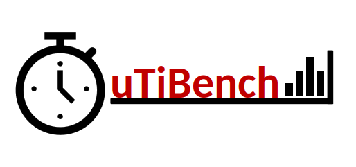

QuTiBench is a novel multi-tiered benchmarking methodology that helps system developers understand the benefits and limitations of the broad spectrum of novel compute architectures that emerge in the space of CNN inference. It is specifically designed to provide systematic benchmarking results capturing throughput, latency and power, on a system level as well as on an accelerator level, across a large spectrum of deployment options such as power modes, batch sizes etc. In particular, QuTibench provides the necessary support for comparing different networks with algorithmic optimizations such as quantization and pruning, which are commonplace for CNN inference in the embedded space. Furthermore, it is unique in that it leverages a theoretical analysis (using UCB’s roofline analysis) to provide performance predictions and efficiency analysis. As such, we hope it can bring the necessary insights for system designers to understand the pros and cons of the various new architectures emerging in this space. We invite the community to contribute to QuTiBench in order to be able to support the full spectrum of choices for implementing machine learning systems.
Benchmark results can be found below separated by machine learning task. Specific benchmark results can also be found using the Tags and Search pages in the top right corner. For more information about the project, see the About This Work page.